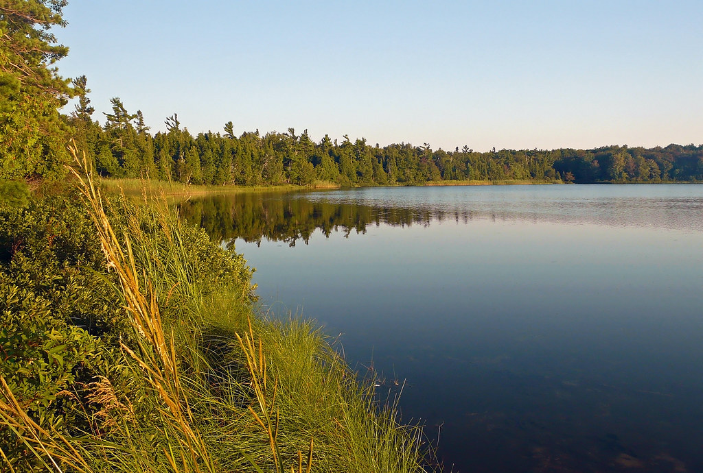

Fishing is the activity of catching fish, either as a means of sustenance or for recreation. It
involves various methods, including angling with a rod, line, and hook, using nets or traps, or
spearing fish. Fishing is a prehistoric practice that provides food and employment for millions of
people globally and is also a popular recreational activity
When:
The best time for fishing is typically early morning and late evening, as fish are more active in the
lower light conditions of dawn and dusk. However, the ideal time can vary depending on factors like
water temperature, weather, tides, and the specific species you are targeting. Midday can be
productive when fish are seeking shade, and night fishing is also excellent for many species.
Personally, I like to fish whenever I so please.
Where:

Fish live in water, so fishing is doen near bodies of water like lakes, rivers, or oceans
Important: A good fishing spot is a personal secret and only you should know
about it
How
To fish, first prepare your line by tying a hook, weights, and a bobber, then bait the hook. Next,
find a good spot, cast your line, and wait patiently for a fish to bite the bait. When you feel a
bite, quickly pull the rod tip up to set the hook and then reel your catch in slowly and steadily.
Prepare Rod and Reel, Lures or Bait and Tools for Hook Extraction
Have a fishing license (optional in my opinion)
Find a fishing spot
Set up your line with the bait or lure
Cast your line
Wait for a bite
Pull up to set the hook and reel in, the fish will fight though
Grab fish out of water, it will be mad
Pull the hook out of the fish's mouth (it hurts the fish ☹)
Take a picture with the fish to show how big it is
Release the fish and let it swim away
Why
One should fish for recreation, as a healthy food source, to connect with nature, and to support
conservation efforts. Fishing provides physical and mental health benefits, such as stress reduction
and improved concentration, while also offering an opportunity to spend quality time with loved ones
and gain a sustainable food source rich in protein and omega-3 fatty acids.